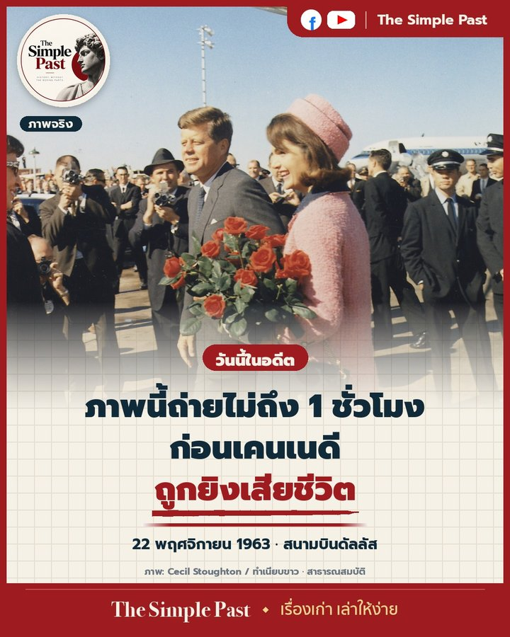

ภาพนี้ถ่ายไม่ถึง 1 ชั่วโมง ก่อนเคนเนดีถูกยิงเสียชีวิต
ภาพนี้ถ่ายวันที่ 22 พฤศจิกายน 1963 ที่สนามบินเมืองดัลลัส ประธานาธิบดีเคนเนดีกับภรรยาเพิ่งลงจากเครื่อง ภรรยาได้ช่อกุหลาบแดงเป็นของต้อนรับ ไม่ถึงหนึ่งชั่วโมงต่อมา ขณะนั่งรถเปิดประทุนโบกมือให้ฝูงชนกลางเมือง เคนเนดีถูกยิงเสียชีวิต